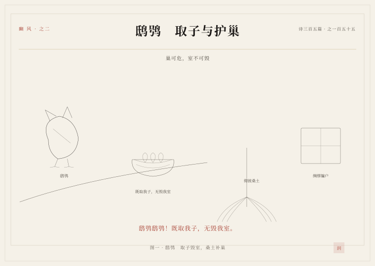
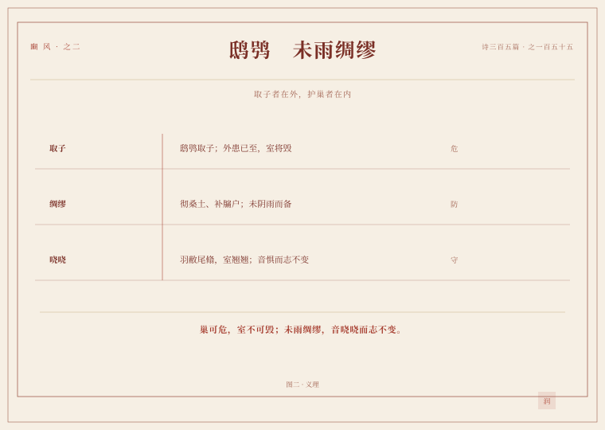

第一百五十五篇 鸱鸮
豳风 · 之二 SJ155
朗读 · 普通话
依经文原文朗读，章次不读出；配古琴底乐，不改速、不加拖腔。全库同一音色（豆包 TTS），非播音员录制。
一 解题
诗三判：
- 谁在说：周公。成王未知周公之志，管叔、蔡叔流言，周公乃作此诗以遗王，借鸟护巢自喻。
- 说什么事：四章皆鸟语：鸱鸮取子、毁室；鸟彻桑土、绸缪牖户；手拮据、口卒瘏；羽谯谯、尾翛翛、室翘翘。巢愈危，护愈急。
- 为何编在此：豳风第二篇。前篇陈农事，此篇陈王室之难；一岁之勤，一室之危，皆周公所忧。
《毛序》：「《鸱鸮》，周公救乱也。成王未知周公之志，公乃为诗以遗王，名之曰《鸱鸮》焉。」
朱子《诗集传》：「比也。鸱鸮，恶鸟，取我子，毁我室，以比管蔡之流言，将危害王室也。恩斯勤斯，鬻子之闵斯，言我之恩勤如此，而鬻子之可闵也。」二章：「迨，及也。彻，取也。桑土，桑根之皮也。绸缪，缠绵补葺也。牖户，巢之通气出入处也。」三章：「拮据，手口共作之貌。荼，苦菜。租，亦蓄也。瘏，病也。」四章：「谯谯，杀也。翛翛，敝也。翘翘，危也。哓哓，惧也。」
本库的看法：《鸱鸮》是一首把「王室之危」写成「鸟巢之危」的诗。
毛序说「救乱」，朱子说「比管蔡」，二说一政一喻，其实同指：取子者在外，护巢者在内；未雨而绸缪，既危而哓哓。
须辨：鸱鸮是恶鸟，不是猫头鹰泛称；「我子」喻管蔡所危之王室子弟，不是鸟之子；「我室」喻周室，不是鸟巢；「彻彼桑土」是取桑根皮，不是拆桑树；「蓄租」是蓄积草料，不是收租；「哓哓」是惧声，不是喧闹。诗不辩流言，只写护巢之劳。
断语：巢可危，室不可毁；未雨绸缪，音哓哓而志不变。
先辨五事：「鸱鸮」是恶鸟；「我子」喻王室子弟；「我室」喻周室；「桑土」是桑根皮；「蓄租」是蓄积，不是租税。
二 经文
第一章
鸱鸮鸱鸮！既取我子，无毁我室。
恩斯勤斯，鬻子之闵斯。
第二章
迨天之未阴雨，彻彼桑土，绸缪牖户。
今女下民，或敢侮予！
第三章
予手拮据，予所捋荼，予所蓄租，予口卒瘏，曰予未有室家！
第四章
予羽谯谯，予尾翛翛，予室翘翘，风雨所漂摇，予维音哓哓。
三 韵读
- 一章：子、室、斯，之、质旁转。声急，如鸟呼。
- 二章：雨、土、户、予，鱼部相叶。声沉，如补葺。
- 三章：据、荼、租、瘏、家，鱼部相叶。声劳，如手口并用。
- 四章：谯、翛、翘、摇、哓，宵部相叶。声颤，如风雨中鸣。
读法：四章皆短韵，一章比一章急；末章五韵连下，正是「哓哓」。
四 字义与名物
- 鸱鸮：恶鸟。取：夺。子：喻王室子弟。室：喻周室。恩：爱。勤：劳。鬻：育。闵：怜、病。
- 迨：及。阴雨：天将雨。彻：取。桑土：桑根皮。绸缪：缠绵补葺。牖户：巢之通气出入处。女：汝。下民：下方之人。侮：欺。
- 拮据：手口共作之貌。捋：取。荼：苦菜。蓄：积。租：蓄积草料。卒瘏：口病。未有室家：未成家室。
- 谯谯：羽毛憔悴。翛翛：尾羽敝。翘翘：危。漂摇：风雨摇动。哓哓：惧声。
五 今译
一章：鸱鸮啊鸱鸮！你既取了我的孩子，不要毁了我的家。我爱之如此、劳之如此，育子之可怜如此。
二章：趁天还未阴雨，取那桑根皮，缠绵补葺窗户。如今你们下方之人，有谁敢来欺我！
三章：我的手拮据，我所捋的是苦菜，我所蓄的是草料，我的口也病了，说是我还没有家室！
四章：我的羽毛憔悴，我的尾巴敝坏，我的家危险，风雨漂摇，我只能哓哓地叫。
六 章旨
- 一章：取子毁室，是「外患」；恩勤鬻子，是「内忧」；一呼一诉，先立护巢之志。
- 二章：未雨绸缪，是「预防」；彻桑土、补牖户，是「先事」；未危而备，是全诗最要。
- 三章：手口俱病，是「劳」；未有室家，是「不以家为念」；劳到极处，仍不言退。
- 四章：羽尾俱敝，是「身疲」；室翘翘、音哓哓，是「势危」；身疲而志不变。
七 诗教
- 防患未然：未阴雨而绸缪，是周公之智；待雨至而补，已晚。
- 以公忘私：手口俱病，曰「未有室家」；不以一身之家，易天下之室。
- 危而不去：羽敝尾翛，仍哓哓护巢；诗之美，不在成功，在危时不去。
八 分寸与边界
- 不把鸱鸮读成猫头鹰泛称：鸱鸮是恶鸟之喻；认作普通鸟，则比义失。
- 不把「我子」读成鸟子：我子喻王室子弟；读成鸟雏，则诗旨浅。
- 不把「我室」读成鸟巢：我室喻周室；读成鸟巢，则「无毁我室」无着。
- 不把「蓄租」读成收租：蓄租是蓄积草料；读成租税，则句义不通。
九 存疑
- 诗旨：毛序「救乱」，朱子「比管蔡」。本库从毛朱，以护巢喻护国为骨。
- 「我子」：一说喻管蔡所危之王子，一说喻民。从王室子弟。
- 「蓄租」：毛传「租，为也」，朱子「亦蓄也」。从蓄积草料。
- 「予未有室家」：一说未有家室，一说周室未安。从周室未安。
十 跨典
- 《尚书·金縢》周公避流言、成王启金縢；此篇正其诗证。
- 《周易·既济》「君子以思患而豫防之」；此篇「未阴雨而绸缪」，正是豫防。
- 《孟子》「生于忧患」；此篇羽敝尾翛而音哓哓，正是忧患中之守。
十一 双卡与图
六对：
| 鸱鸮（恶鸟之喻） |
鸱鸮（普通猫头鹰） |
| 我子（喻王室子弟） |
我子（鸟雏） |
| 我室（喻周室） |
我室（鸟巢） |
| 桑土（桑根皮） |
桑土（桑树土） |
| 蓄租（蓄积草料） |
蓄租（收租） |
| 哓哓（惧声） |
哓哓（喧闹） |

图一 · 鸱鸮 取子毁室，绸缪牖户

图二 · 鸱鸮 未雨绸缪，音哓哓而志不变